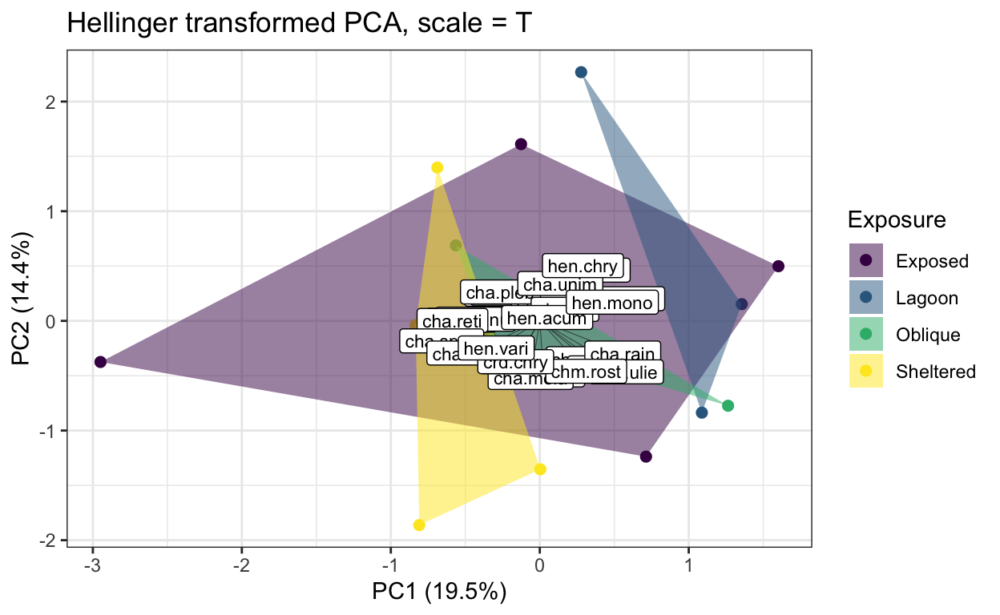
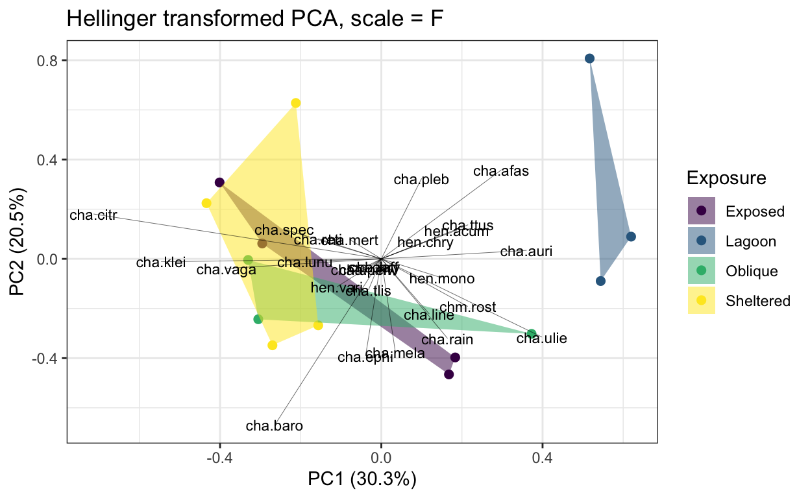
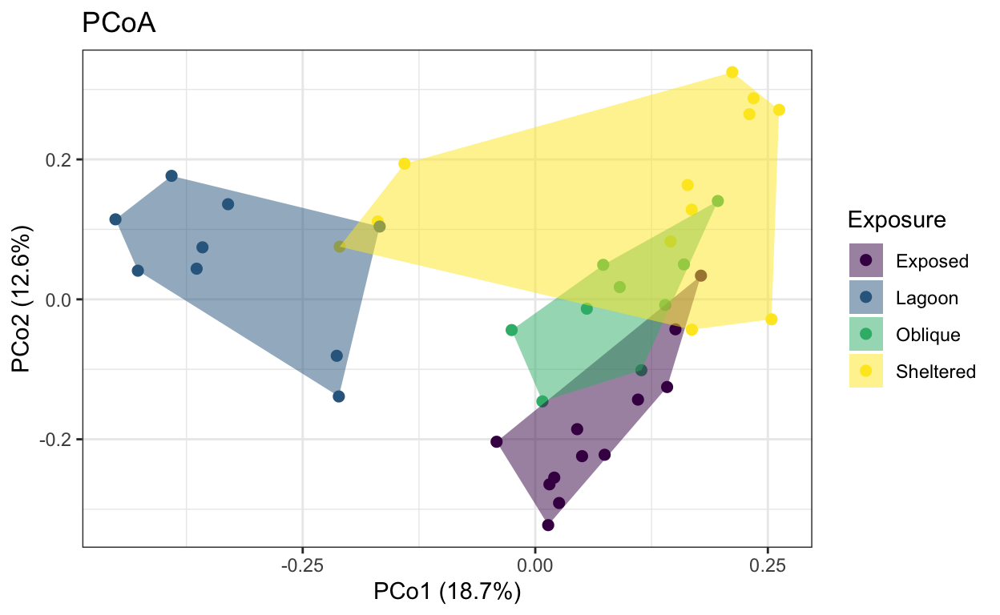
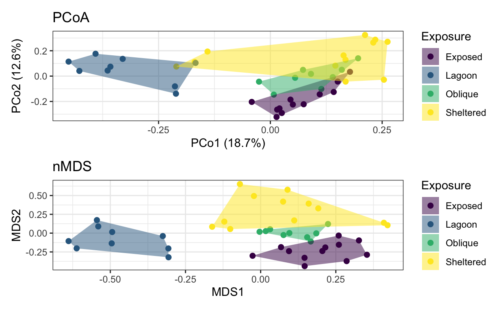
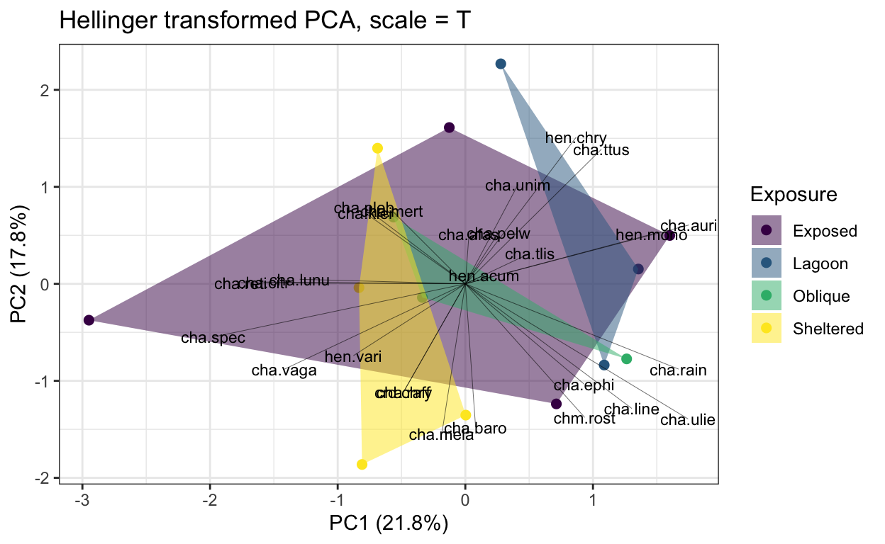
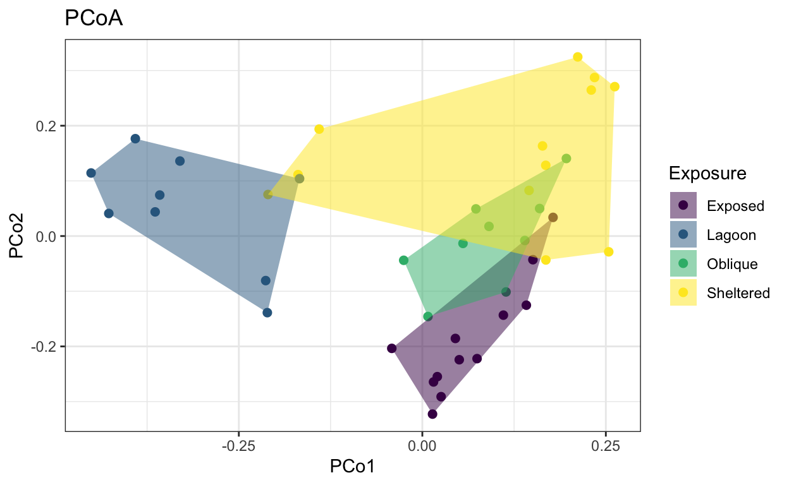
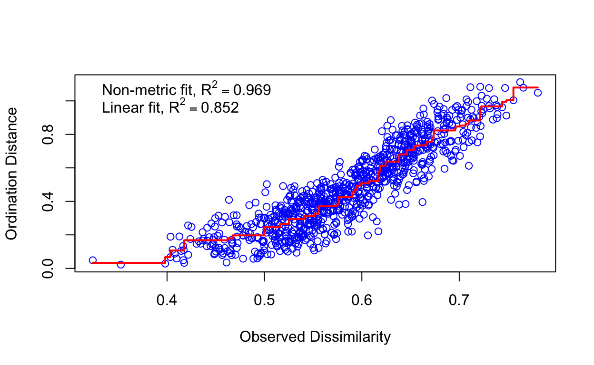
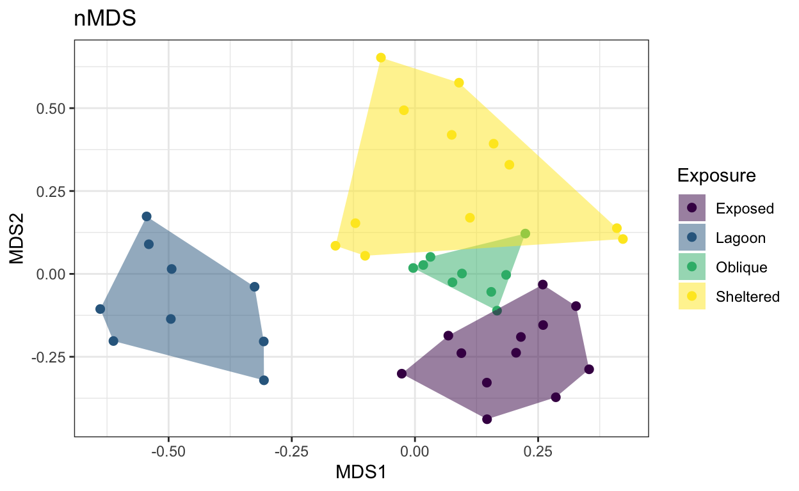
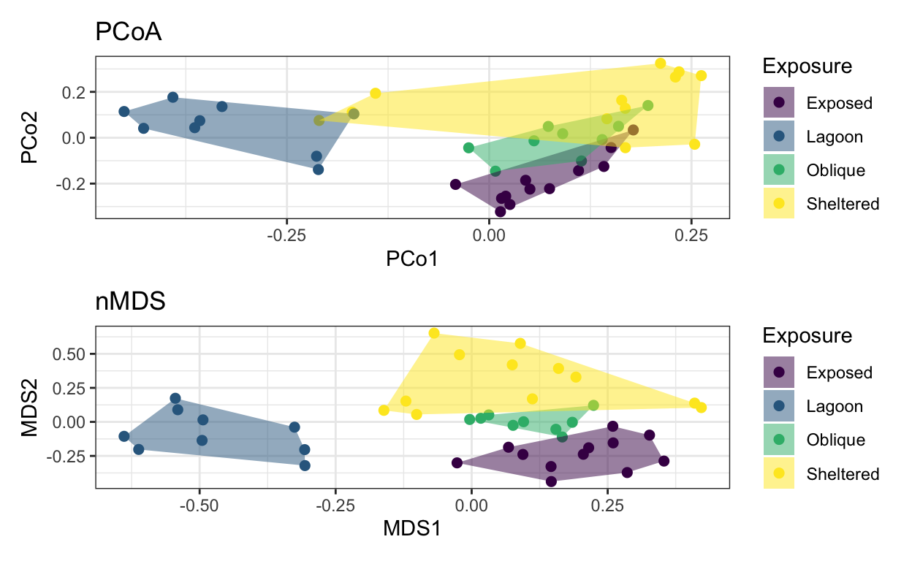
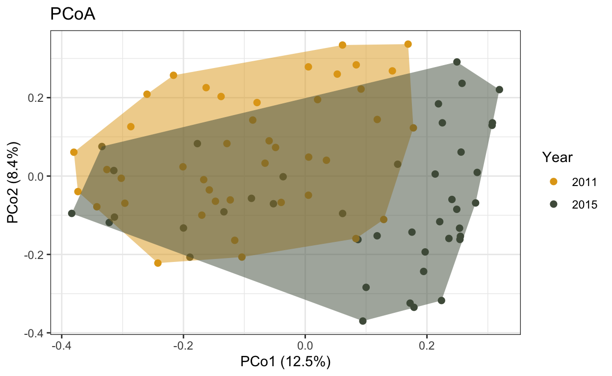

a. 5: Demo
b. 5: Slides
You can access the full slideshow used in the 5-PCA narration here.
The dataset called ‘coralreefherbivores.csv’ can be downloaded here.
The dataset called ‘fishcoms_lizardisland.csv’ can be downloaded here.
c. 5: Exercises
Start by installing and loading the vegan and the ape package into your environment, along with dplyr, ggplot and patchwork (or load the former two via the tidyverse package)
Then, read in the fishcoms_lizardisland dataset, which is available above
Part I
- Retain only species in the family Chaetodontidae (butterflyfishes) in the dataset, and summarize each species’ abundance across sites, while also retaining information on each site’s exposure level. Bring the data to wide format.
- Divide your dataset into metadata and abundance data, run a PCA on the Hellinger transformed data, and plot the data using ggplot. See how the data changes depending on whether you scale and center your data.


Part II
We now want to examine how the four regimes of wave action impact reef fish community composition across all families. With more than 200 fish species across all families, this is a tough ask for PCA so we will move to distance based ordinations.
Group the data by transect, site, exposure, and species, and sum up the number of individuals (abundance). Turn the data into wide format and split it into meta and raw data as previously.
- Create a distance matrix using the vegdist function and a Bray-Curtis dissimilarity metric. Then, run a PCoA using the pcoa function, choosing the cailliez correction for negative eigenvalues. Visualize the output using ggplot.

- run a non-metric multidimensional scaling ordination (NMDS) on the raw data using the metaMDS function, a Bray-Curtis dissimilarity metric, and two dimensions. Check the stress and plot the results using ggplot. Investigate your PCoA and NMDS side-by-side.

Part IV
We will continue using the “fishcoms_lizardisland.csv” dataset, but this time, we will explore differences in fish communities between the two years, 2011 and 2015.
- Calculate fish abundance per transect, site, and year for each species.
- Put the dataset in wide format.
- Split the metadata from the numeric data.
- Run a PCoA with Bray-Curtis dissimilarity.
- Check eigenvalues. Add a correction if needed.
- Plot the PCoA with different colors and polygons for the two years.

d. 5: Solutions
Start by installing and loading the vegan and the ape package into your environment, along with dplyr, ggplot and patchwork (or load the former two via the tidyverse package)
Then, read in the fishcoms_lizardisland dataset, which is available above
Part I
- Retain only species in the family Chaetodontidae (butterflyfishes) in the dataset, and summarize each species’ abundance across sites, while also retaining information on each site’s exposure level. Bring the data to wide format.
library(vegan)
library(tidyverse)
library(ape)
library(patchwork)
# re-familiarize with the Lizard Island fish community dataset
lfish <- read.csv(file = "data/fishcoms_lizardisland.csv")
head(lfish) Site Exposure year depth transect Family
1 Big Vickis Sheltered 2011 deep 1 Acanthuridae
2 Big Vickis Sheltered 2011 deep 1 Acanthuridae
3 Big Vickis Sheltered 2011 deep 1 Acanthuridae
4 Big Vickis Sheltered 2011 deep 1 Balistidae
5 Big Vickis Sheltered 2011 deep 1 Chaetodontidae
6 Big Vickis Sheltered 2011 deep 1 Chaetodontidae
Functional.Group species abundance
1 Grazer aca.bloc 1
2 Grazer cte.bino 1
3 Grazer cte.stri 3
4 Macroinvertivore suf.chry 2
5 Obligate corallivore cha.baro 4
6 Obligate corallivore cha.ttus 2lizard.sum <- lfish %>%
filter(Family == "Chaetodontidae") %>%
group_by(Site, Exposure, species) %>%
summarize(abundance = sum(abundance))
lizard.sum# A tibble: 181 × 4
# Groups: Site, Exposure [14]
Site Exposure species abundance
<chr> <chr> <chr> <int>
1 Big Vickis Sheltered cha.afas 18
2 Big Vickis Sheltered cha.auri 6
3 Big Vickis Sheltered cha.baro 42
4 Big Vickis Sheltered cha.citr 13
5 Big Vickis Sheltered cha.ephi 10
6 Big Vickis Sheltered cha.klei 1
7 Big Vickis Sheltered cha.mela 13
8 Big Vickis Sheltered cha.mert 1
9 Big Vickis Sheltered cha.pleb 3
10 Big Vickis Sheltered cha.raff 2
# ℹ 171 more rows# spread into wide format and get rid of NAs
lizard.wide <- lizard.sum %>%
spread(key = species, value = abundance, fill = 0)
lizard.wide# A tibble: 14 × 29
# Groups: Site, Exposure [14]
Site Exposure cha.afas cha.auri cha.baro cha.citr cha.ephi
<chr> <chr> <dbl> <dbl> <dbl> <dbl> <dbl>
1 Big Vickis Shelter… 18 6 42 13 10
2 Blue Lagoon Lagoon 0 6 0 0 1
3 Bommie Bay Oblique 0 7 8 2 5
4 Coconut Exposed 2 4 3 6 3
5 Granite Shelter… 0 9 5 5 3
6 LTMP1 Exposed 1 19 15 0 5
7 LTMP3 Exposed 3 20 17 0 2
8 Monkey's Butt Lagoon 9 12 1 0 2
9 North Reef Shelter… 1 3 2 16 1
10 Palfrey Lago… Lagoon 8 6 0 0 0
11 Pidgin Point Exposed 2 1 1 2 0
12 Resort Shelter… 5 12 0 5 0
13 Steve's Gully Oblique 15 13 7 0 5
14 Washing Mach… Oblique 2 10 11 5 8
# ℹ 22 more variables: cha.klei <dbl>, cha.line <dbl>,
# cha.lunu <dbl>, cha.mela <dbl>, cha.mert <dbl>, cha.pelw <dbl>,
# cha.pleb <dbl>, cha.raff <dbl>, cha.rain <dbl>, cha.reti <dbl>,
# cha.spec <dbl>, cha.tlis <dbl>, cha.ttus <dbl>, cha.ulie <dbl>,
# cha.unim <dbl>, cha.vaga <dbl>, chm.rost <dbl>, crd.chry <dbl>,
# hen.acum <dbl>, hen.chry <dbl>, hen.mono <dbl>, hen.vari <dbl>- Divide your dataset into metadata and abundance data, run a PCA on the Hellinger transformed data, and plot the data using ggplot. See how the data changes depending on whether you scale and center your data.
# isolate metadata
lizard.meta <- lizard.wide[1:2]
lizard.meta# A tibble: 14 × 2
# Groups: Site, Exposure [14]
Site Exposure
<chr> <chr>
1 Big Vickis Sheltered
2 Blue Lagoon Lagoon
3 Bommie Bay Oblique
4 Coconut Exposed
5 Granite Sheltered
6 LTMP1 Exposed
7 LTMP3 Exposed
8 Monkey's Butt Lagoon
9 North Reef Sheltered
10 Palfrey Lagoon Lagoon
11 Pidgin Point Exposed
12 Resort Sheltered
13 Steve's Gully Oblique
14 Washing Machine Oblique # A tibble: 14 × 27
cha.afas cha.auri cha.baro cha.citr cha.ephi cha.klei cha.line
<dbl> <dbl> <dbl> <dbl> <dbl> <dbl> <dbl>
1 18 6 42 13 10 1 0
2 0 6 0 0 1 0 0
3 0 7 8 2 5 12 0
4 2 4 3 6 3 9 0
5 0 9 5 5 3 3 1
6 1 19 15 0 5 7 1
7 3 20 17 0 2 3 4
8 9 12 1 0 2 0 1
9 1 3 2 16 1 2 0
10 8 6 0 0 0 0 0
11 2 1 1 2 0 2 0
12 5 12 0 5 0 10 0
13 15 13 7 0 5 2 1
14 2 10 11 5 8 13 0
# ℹ 20 more variables: cha.lunu <dbl>, cha.mela <dbl>,
# cha.mert <dbl>, cha.pelw <dbl>, cha.pleb <dbl>, cha.raff <dbl>,
# cha.rain <dbl>, cha.reti <dbl>, cha.spec <dbl>, cha.tlis <dbl>,
# cha.ttus <dbl>, cha.ulie <dbl>, cha.unim <dbl>, cha.vaga <dbl>,
# chm.rost <dbl>, crd.chry <dbl>, hen.acum <dbl>, hen.chry <dbl>,
# hen.mono <dbl>, hen.vari <dbl># the decostand() function in vegan allows for transformations like Hellinger
lizard.hell <- decostand(lizard.raw, method = "hellinger")
head(lizard.hell) cha.afas cha.auri cha.baro cha.citr cha.ephi cha.klei
1 0.33859959 0.1954906 0.5172194 0.2877543 0.2523772 0.07980869
2 0.00000000 0.4399413 0.0000000 0.0000000 0.1796053 0.00000000
3 0.00000000 0.2773501 0.2964997 0.1482499 0.2344036 0.36313652
4 0.15911146 0.2250176 0.1948709 0.2755891 0.1948709 0.33752637
5 0.00000000 0.3841106 0.2862992 0.2862992 0.2217664 0.22176638
6 0.09853293 0.4294951 0.3816164 0.0000000 0.2203263 0.26069362
cha.line cha.lunu cha.mela cha.mert cha.pelw cha.pleb
1 0.00000000 0.0000000 0.2877543 0.07980869 0.00000000 0.1382327
2 0.00000000 0.0000000 0.1796053 0.00000000 0.00000000 0.3110855
3 0.00000000 0.1482499 0.2096570 0.00000000 0.00000000 0.0000000
4 0.00000000 0.1948709 0.2250176 0.11250879 0.00000000 0.1125088
5 0.12803688 0.0000000 0.2560738 0.00000000 0.00000000 0.0000000
6 0.09853293 0.0000000 0.1970659 0.00000000 0.09853293 0.0000000
cha.raff cha.rain cha.reti cha.spec cha.tlis cha.ttus
1 0.1128665 0.1128665 0 0.1128665 0.00000000 0.3743359
2 0.0000000 0.1796053 0 0.0000000 0.00000000 0.5679618
3 0.0000000 0.2344036 0 0.0000000 0.00000000 0.5929995
4 0.0000000 0.1591115 0 0.0000000 0.15911146 0.5511783
5 0.0000000 0.1280369 0 0.0000000 0.00000000 0.3387537
6 0.0000000 0.2413554 0 0.0000000 0.09853293 0.5119921
cha.ulie cha.unim cha.vaga chm.rost crd.chry hen.acum
1 0.1382327 0.0000000 0.2986168 0.1382327 0.1128665 0.00000000
2 0.2540003 0.0000000 0.1796053 0.3110855 0.0000000 0.25400025
3 0.0000000 0.0000000 0.3476767 0.0000000 0.0000000 0.00000000
4 0.0000000 0.2515773 0.2976703 0.0000000 0.0000000 0.00000000
5 0.1280369 0.0000000 0.5580998 0.2217664 0.0000000 0.00000000
6 0.1706640 0.1393466 0.2203263 0.0000000 0.0000000 0.09853293
hen.chry hen.mono hen.vari
1 0.0000000 0.0000000 0.0000000
2 0.0000000 0.1796053 0.0000000
3 0.0000000 0.0000000 0.1815683
4 0.1591115 0.1125088 0.0000000
5 0.0000000 0.0000000 0.0000000
6 0.1393466 0.1706640 0.0000000# run a PCA and retain percent variation explained by PC1 and PC2
lizard.pca <- summary(rda(lizard.hell, scale = T))
lizard.pca
Call:
rda(X = lizard.hell, scale = T)
Partitioning of correlations:
Inertia Proportion
Total 27 1
Unconstrained 27 1
Eigenvalues, and their contribution to the correlations
Importance of components:
PC1 PC2 PC3 PC4 PC5 PC6
Eigenvalue 5.2730 3.8918 3.7217 3.3114 2.58968 1.9738
Proportion Explained 0.1953 0.1441 0.1378 0.1226 0.09591 0.0731
Cumulative Proportion 0.1953 0.3394 0.4773 0.5999 0.69583 0.7689
PC7 PC8 PC9 PC10 PC11 PC12
Eigenvalue 1.81768 1.47629 1.0449 0.75706 0.44481 0.3725
Proportion Explained 0.06732 0.05468 0.0387 0.02804 0.01647 0.0138
Cumulative Proportion 0.83626 0.89093 0.9296 0.95768 0.97415 0.9879
PC13
Eigenvalue 0.32549
Proportion Explained 0.01206
Cumulative Proportion 1.00000# extract the site scores and merge with metadata
lizard.scores <- as.data.frame(lizard.pca$sites) %>%
bind_cols(lizard.meta)
# create convex hulls grouped by site exposure based on site scores
lizard.hulls <- lizard.scores %>%
group_by(Exposure) %>%
slice(chull(PC1, PC2))
# extract the loadings from species scores
lizard.loadings <- as.data.frame(lizard.pca$species) %>%
mutate(species = rownames(.))
# plot the PCA results with color and convex hulls as exposure and species as loadings
lizard.plot2 <- ggplot() +
geom_point(data = lizard.scores, aes(x = PC1, y = PC2, color = Exposure), size = 2) +
geom_polygon(data = lizard.hulls, aes(x = PC1, PC2, fill = Exposure), alpha = 0.5) +
geom_segment(data = lizard.loadings, aes(x = 0, xend = PC1*3,
y = 0, yend = PC2*3), lwd = 0.1) +
geom_text(data = lizard.loadings, aes(x = PC1*3, y = PC2*3, label = species), size = 3) +
scale_fill_viridis_d() +
scale_color_viridis_d() +
theme_bw() +
xlab("PC1 (21.8%)") +
ylab("PC2 (17.8%)") +
ggtitle("Hellinger transformed PCA, scale = T")
lizard.plot2
# run the same PCA, but with scale = F
# retain percent variation explained by PC1 and PC2
lizard.pca <- summary(rda(lizard.hell, scale = F))
# extract the site scores and merge with metadata
lizard.scores <- as.data.frame(lizard.pca$sites) %>%
bind_cols(lizard.meta)
# create convex hulls grouped by site exposure based on site scores
lizard.hulls <- lizard.scores %>%
group_by(Exposure) %>%
slice(chull(PC1, PC2))
# extract the loadings from species scores
lizard.loadings <- as.data.frame(lizard.pca$species) %>%
mutate(species = rownames(.))
# plot the PCA results with color and convex hulls as exposure and species as loadings
lizard.plot3 <- ggplot() +
geom_point(data = lizard.scores, aes(x = PC1, y = PC2, color = Exposure), size = 2) +
geom_polygon(data = lizard.hulls, aes(x = PC1, PC2, fill = Exposure), alpha = 0.5) +
geom_segment(data = lizard.loadings, aes(x = 0, xend = PC1*2,
y = 0, yend = PC2*2), lwd = 0.1) +
geom_text(data = lizard.loadings, aes(x = PC1*2, y = PC2*2, label = species), size = 3) + # you can spread out loadings by multiplying values
scale_fill_viridis_d() +
scale_color_viridis_d() +
theme_bw() +
xlab("PC1 (30.3%)") +
ylab("PC2 (20.5%)") +
ggtitle("Hellinger transformed PCA, scale = F")
lizard.plot3
Part II
We now want to examine how the four regimes of wave action impact reef fish community composition across all families. With more than 200 fish species across all families, this is a tough ask for PCA so we will move to distance based ordinations.
Group the data by transect, site, exposure, and species, and sum up the number of individuals (abundance). Turn the data into wide format and split it into meta and raw data as previously.
# call the entire dataset
# group by transect, site, exposure, and species
# summarize the species abundances
lizard.sum <- lfish %>%
group_by(transect, Site, Exposure, species) %>%
summarize(abundance = sum(abundance))
# convert data to wide format
lizard.wide <- lizard.sum %>%
spread(key = species, value = abundance, fill = 0)
# isolate metadata
lizard.meta <- lizard.wide[1:3]
# isolate numeric data
lizard.raw <- lizard.wide %>%
ungroup() %>%
select(-c(1:3))- Create a distance matrix using the vegdist function and a Bray-Curtis dissimilarity metric. Then, run a PCoA using the pcoa function, choosing the cailliez correction for negative eigenvalues. Visualize the output using ggplot.
# create a distance matrix with vegdist() from the vegan package
# use the Bray-Curtis dissimilarity metric, which is a dissimilarity measure designed to handle abundance data
lizard.dist <- vegdist(lizard.raw, method = "bray")
# run the PCoA using the cmdscale() function
lizard.pcoa <- pcoa(lizard.dist, correction = "cailliez")
lizard.pcoa$correction
[1] "cailliez" "3"
$note
[1] "Cailliez correction applied to negative eigenvalues: D' = -0.5*(D + 0.104329701745338 )^2, except diagonal elements"
$values
Eigenvalues Corr_eig Rel_corr_eig Broken_stick Cum_corr_eig
1 1.7237838249 2.047441399 0.1879345664 0.106963576 0.1879346
2 1.1452242740 1.381051412 0.1267666554 0.081963576 0.3147012
3 0.6463909538 0.799445512 0.0733810725 0.069463576 0.3880823
4 0.5537202216 0.691401691 0.0634637343 0.061130243 0.4515460
5 0.4762933230 0.599868974 0.0550619498 0.054880243 0.5066080
6 0.3911930529 0.499924068 0.0458880108 0.049880243 0.5524960
7 0.3342038932 0.432179235 0.0396697152 0.045713576 0.5921657
8 0.3073084585 0.401637311 0.0368662732 0.042142147 0.6290320
9 0.2848822844 0.375651340 0.0344810219 0.039017147 0.6635130
10 0.2359893126 0.312830802 0.0287147272 0.036239370 0.6922277
11 0.2240308465 0.303378349 0.0278470868 0.033739370 0.7200748
12 0.1880727102 0.258826312 0.0237576571 0.031466642 0.7438325
13 0.1847468591 0.256072043 0.0235048428 0.029383309 0.7673373
14 0.1440149003 0.206747423 0.0189773379 0.027460232 0.7863147
15 0.1391043155 0.202020965 0.0185434965 0.025674518 0.8048581
16 0.1303949702 0.188639231 0.0173151877 0.024007851 0.8221733
17 0.1281279671 0.187273350 0.0171898135 0.022445351 0.8393631
18 0.1209120374 0.178769672 0.0164092613 0.020974763 0.8557724
19 0.1039267405 0.158533473 0.0145517813 0.019585874 0.8703242
20 0.0953221167 0.146572789 0.0134539106 0.018270085 0.8837781
21 0.0827185050 0.131936709 0.0121104654 0.017020085 0.8958886
22 0.0761160962 0.123728268 0.0113570129 0.015829608 0.9072456
23 0.0664507120 0.112464123 0.0103230775 0.014693245 0.9175687
24 0.0618909965 0.105977306 0.0097276528 0.013606288 0.9272963
25 0.0539588474 0.097940583 0.0089899623 0.012564622 0.9362863
26 0.0507426737 0.092264447 0.0084689500 0.011564622 0.9447552
27 0.0454963831 0.086465149 0.0079366326 0.010603083 0.9526919
28 0.0388430427 0.077826274 0.0071436706 0.009677157 0.9598355
29 0.0329721021 0.071845038 0.0065946533 0.008784300 0.9664302
30 0.0246977736 0.061895057 0.0056813449 0.007922231 0.9721115
31 0.0195081685 0.054447557 0.0049977391 0.007088898 0.9771093
32 0.0126607325 0.048501185 0.0044519219 0.006282446 0.9815612
33 0.0103924229 0.044826215 0.0041145965 0.005501196 0.9856758
34 0.0079417893 0.042796658 0.0039283036 0.004743620 0.9896041
35 0.0004461808 0.034572345 0.0031733942 0.004008326 0.9927775
36 0.0000000000 0.024678559 0.0022652440 0.003294040 0.9950427
37 -0.0071451768 0.020459275 0.0018779561 0.002599596 0.9969207
38 -0.0092778157 0.017090137 0.0015687030 0.001923920 0.9984894
39 -0.0136295336 0.012806918 0.0011755465 0.001266026 0.9996649
40 -0.0198114162 0.003650404 0.0003350705 0.000625000 1.0000000
41 -0.0259698794 0.000000000 0.0000000000 0.000000000 1.0000000
42 -0.0281545469 0.000000000 0.0000000000 0.000000000 1.0000000
Cum_br_stick
1 0.1069636
2 0.1889272
3 0.2583907
4 0.3195210
5 0.3744012
6 0.4242815
7 0.4699950
8 0.5121372
9 0.5511543
10 0.5873937
11 0.6211331
12 0.6525997
13 0.6819830
14 0.7094432
15 0.7351178
16 0.7591256
17 0.7815710
18 0.8025457
19 0.8221316
20 0.8404017
21 0.8574218
22 0.8732514
23 0.8879446
24 0.9015509
25 0.9141155
26 0.9256802
27 0.9362832
28 0.9459604
29 0.9547447
30 0.9626669
31 0.9697558
32 0.9760383
33 0.9815395
34 0.9862831
35 0.9902914
36 0.9935855
37 0.9961851
38 0.9981090
39 0.9993750
40 1.0000000
41 1.0000000
42 1.0000000
$vectors
Axis.1 Axis.2 Axis.3 Axis.4 Axis.5
1 -0.169343902 0.111362282 0.044303106 0.104292114 -0.046394081
2 -0.451281604 0.114325972 -0.094927345 0.023648248 0.088962412
3 0.159803853 0.049922107 -0.044296366 0.127301353 0.042865962
4 0.110401192 -0.143316894 -0.169753553 0.016459880 -0.010569206
5 0.262134305 0.270832648 0.045551841 -0.032484782 0.012568717
6 0.013867453 -0.322687479 0.017001603 -0.035814885 -0.059302934
7 0.015234736 -0.264395699 -0.049010994 -0.090509674 -0.064912874
8 -0.211178112 -0.138801631 0.227704230 -0.098001556 0.172054733
9 0.168286115 -0.043361153 0.020701078 0.013116016 -0.017867373
10 -0.364013023 0.043814726 -0.105910018 -0.083957935 -0.214425424
11 0.050287582 -0.224119652 -0.231347906 0.084867915 0.164266117
12 0.168140226 0.128265348 -0.147813518 -0.283977803 -0.168372000
13 0.007677336 -0.145804213 0.074787355 -0.066385812 -0.153178770
14 0.055376418 -0.013336868 -0.001015276 0.035801613 -0.088934689
15 -0.210262137 0.075344861 0.093621305 0.068057230 0.013102024
16 -0.427170514 0.040946293 -0.176232807 -0.058110707 0.080936479
17 0.090801781 0.017532823 0.027054205 0.188692377 0.014687192
18 0.074555675 -0.222151821 -0.143056189 -0.030046549 -0.037711083
19 0.230138156 0.264666597 0.051949465 -0.024954209 0.014063083
20 0.025580231 -0.291084943 -0.016635631 -0.057735860 -0.184002881
21 0.020392030 -0.254786126 -0.073064253 -0.018848897 -0.155671847
22 -0.213405343 -0.080691422 0.269909352 -0.018949505 0.175080200
23 0.253941794 -0.028540411 0.098353719 0.024501475 0.038052762
24 -0.357736333 0.074330479 -0.020006864 0.047842684 -0.166770593
25 0.141707196 -0.125316972 -0.148210361 0.082823970 0.186726753
26 0.211729977 0.324698546 -0.060413632 -0.232992305 0.009572404
27 -0.025387340 -0.043907012 0.177208266 0.126345576 -0.018674142
28 0.139600069 -0.008031405 0.026226317 0.157300197 0.023778084
29 -0.140565449 0.193857385 -0.005355031 0.044217942 -0.074366481
30 -0.390984455 0.176500523 -0.122493624 -0.015717838 0.128308890
31 0.114021352 -0.101267519 0.094098672 0.025854130 0.113874909
32 0.150646805 -0.042847986 -0.112235206 0.027401681 -0.003487300
33 0.163748562 0.163380808 0.140587730 0.004175263 -0.026327636
34 0.045020697 -0.185569191 0.158446329 0.075310714 -0.002698490
35 -0.041610168 -0.203567529 0.149895658 -0.400188339 0.205562610
36 -0.167252931 0.104032274 0.109530486 0.113595079 -0.080454973
37 0.145421117 0.082719968 0.138710236 0.048767279 -0.090152914
38 -0.330250941 0.135962648 -0.027030723 0.004406455 0.021900806
39 0.178077348 0.033848600 -0.295398175 0.104706269 0.173673454
40 0.234611185 0.287383041 0.008954106 -0.192099973 0.052453703
41 0.073013160 0.049278691 0.134537671 0.101341932 -0.073463211
42 0.196225903 0.140579304 -0.064925258 0.089949235 0.005247608
Axis.6 Axis.7 Axis.8 Axis.9 Axis.10
1 -0.0197532965 -0.027801241 -0.022747705 0.130367974 -0.069444201
2 -0.1420812357 -0.059254567 -0.013855686 -0.072623605 -0.038896642
3 0.1084983418 0.089256411 -0.058085002 0.088744744 -0.047806840
4 0.0529796830 -0.122924768 -0.057258032 0.036792618 -0.004896148
5 -0.0039671325 -0.174265742 -0.042392237 -0.003977175 0.019263302
6 -0.0120032006 0.062623675 0.009396645 0.074232426 -0.124925766
7 -0.0222768723 0.056185656 -0.098059221 -0.054340079 0.076737629
8 0.0282679021 0.123384976 -0.014063703 0.036459577 0.132576064
9 -0.1295334112 0.002427031 0.016808797 -0.159069959 0.073559007
10 0.1382806049 0.014405731 0.098963730 -0.099753163 0.025568627
11 0.0032641572 -0.065819496 0.134514830 0.087446409 0.065133851
12 -0.0734932382 0.119211062 -0.032481554 0.065263023 0.023341599
13 -0.0657359024 0.024321124 -0.045635135 -0.016271714 0.153301527
14 0.0466522732 0.084171820 -0.171145509 -0.084800143 0.036712489
15 -0.1583418094 -0.026211307 -0.169353958 0.073553534 -0.027610742
16 -0.1549797229 -0.045309572 -0.034371827 -0.025286791 0.008482984
17 0.0308634381 0.039201877 -0.004909861 -0.025232121 0.001473440
18 -0.0070651204 -0.001315762 0.024706360 0.192584529 -0.005995451
19 0.0557488085 -0.266279074 0.018169965 0.016813790 0.079040030
20 -0.1369440704 0.001464967 0.056907202 -0.040062761 -0.062633828
21 0.0435329186 -0.068951552 -0.055398457 0.009636068 -0.057217569
22 0.0442913803 0.082675386 0.106365735 0.069227313 -0.040375080
23 -0.1704205673 -0.013322929 0.162020444 -0.208122904 -0.078611175
24 0.2205051880 -0.094980301 0.231943705 -0.034722452 -0.036297939
25 -0.0552026763 0.038840338 0.042771053 -0.016694810 0.123418475
26 -0.0466543513 0.101803817 0.127181656 0.025733937 0.025041435
27 -0.0774016090 -0.039249988 0.036959135 0.084788227 0.069716340
28 0.0865361797 0.084866862 -0.109912191 0.007354105 0.002787894
29 0.0573023721 0.008055381 -0.044767167 0.102479274 -0.010848163
30 -0.1263420007 0.001597870 -0.104390940 -0.063988416 -0.150593588
31 0.0599410714 0.040044421 0.074779925 -0.015881409 -0.093377121
32 0.0007983876 -0.114458547 -0.007820878 0.078901942 -0.071055384
33 -0.0907703330 -0.121337128 -0.003026797 0.045907220 0.034495963
34 -0.0810181862 -0.069446753 0.093697935 0.016161322 -0.040931244
35 0.2275841363 -0.154759027 -0.128359765 -0.084850639 -0.044167531
36 0.1322799807 0.104060943 -0.036775307 -0.065163055 -0.046844846
37 -0.0081487465 0.027614051 -0.020462804 -0.131206871 -0.019714702
38 0.0342984409 0.043777982 0.059138140 0.041292188 0.225054249
39 0.1246584588 0.093829691 0.019952927 -0.140076192 -0.005820761
40 -0.0255936717 0.169177219 0.083052065 0.104201114 -0.114289904
41 0.0109532832 0.043092248 -0.017047360 -0.009346092 0.017858912
42 0.1004901480 0.009597217 -0.105009152 -0.036470984 -0.001209192
Axis.11 Axis.12 Axis.13 Axis.14 Axis.15
1 -0.144086282 0.033341494 -0.0627504758 -0.0281932481 0.135447899
2 0.035246546 0.047517146 0.0037963278 -0.0281616142 -0.040930700
3 -0.044081252 0.074691437 -0.0454597073 0.0550804260 -0.104956623
4 0.096982269 -0.002764116 0.0290087331 -0.0257089328 0.071356616
5 0.026047575 -0.049100737 -0.1590288023 0.0118565702 -0.028566293
6 -0.013233288 0.046776831 -0.1298410645 0.0260617868 0.043570996
7 0.004533183 -0.148257174 -0.0610074545 0.0144388163 -0.063396730
8 0.108467046 -0.076806018 -0.0362494844 0.0364591361 0.045400141
9 -0.046891608 0.086293496 0.0425193023 0.0564527625 0.110280353
10 0.007019900 0.028025629 -0.0008451588 0.0267719421 0.009290673
11 0.039998249 -0.048063499 0.0199608941 -0.2014924280 -0.054860078
12 0.063467032 0.047310117 0.0057218311 -0.0238902302 -0.002672240
13 -0.063992446 0.012320960 0.0069391669 0.0240467073 -0.074845617
14 0.097333462 0.063864886 0.0208177651 -0.0939068979 0.089223685
15 -0.124206535 -0.132911118 0.0993709168 0.0171258876 -0.047958249
16 0.042691412 0.046694817 -0.0448818359 -0.0437769953 -0.040951306
17 -0.007448865 0.059173799 0.1082723796 0.0156884219 -0.094297063
18 0.009460354 -0.007107786 0.0478789190 0.1204947951 -0.009758791
19 0.093648818 0.025178201 -0.1001357645 0.0629265529 -0.078050123
20 -0.023270496 0.080535990 -0.0260135941 0.0002636819 -0.082197344
21 0.039535987 -0.050433840 -0.0598075816 -0.0189905258 0.016621016
22 0.081021274 0.066321516 -0.0722679178 -0.0029814893 0.025346368
23 -0.004261601 -0.011853102 0.0136645041 0.0282158614 0.023795579
24 -0.029642700 -0.013846215 0.0690905603 -0.0278830212 -0.005044924
25 -0.081050960 -0.037386718 -0.0215425563 -0.0270596432 0.084276530
26 0.050426140 -0.066234024 0.0254390275 -0.0057889304 0.038579465
27 -0.006861895 0.045029331 -0.0190199628 -0.0706745218 0.017694376
28 0.106273083 0.118591719 0.1053943906 -0.0369346141 -0.059980802
29 -0.067105170 -0.015330367 -0.0839008727 -0.0155601791 0.073020584
30 0.074475546 0.004436735 -0.0015732173 0.0613072853 -0.006123657
31 0.122114879 -0.048932336 0.0217287462 0.0909340943 -0.026859843
32 0.010955657 -0.115351574 0.1671528483 0.0860594623 0.077273221
33 0.001616547 0.012738337 0.0616263612 -0.0483075409 0.003289582
34 -0.017680341 0.023981626 0.0113198144 0.0285743474 0.010585915
35 -0.150993905 0.056367412 0.0795200080 -0.0420876969 -0.006702287
36 0.067317842 -0.174885907 -0.0082339519 -0.0331160124 -0.017112711
37 -0.007697602 -0.091681327 0.0167559442 -0.0776077746 0.018502127
38 -0.048823489 0.039994504 0.0624967259 0.1068509816 0.004420572
39 -0.152882480 -0.027542412 -0.1027151115 0.0444013026 -0.018597518
40 -0.080035282 0.011985611 0.0504738628 -0.0736083146 -0.047216001
41 -0.114011953 -0.005254134 -0.0433786159 -0.0197248745 -0.064097817
42 0.049625347 0.092570811 0.0097041004 0.0314446634 0.077201021
Axis.16 Axis.17 Axis.18 Axis.19
1 0.0192632332 -0.125762344 -0.0213001078 0.0599528120
2 -0.0517199194 0.028211313 0.0393555810 -0.0115324188
3 -0.0602362245 -0.028226820 -0.0001916871 -0.0812641550
4 0.0268926969 0.033724681 -0.0354882824 -0.0810995591
5 -0.0158896761 0.019932586 0.0378531043 0.0120845244
6 -0.0603284286 -0.029532961 -0.0457869886 0.0443106654
7 0.0142647279 -0.016619965 0.0241941048 -0.0007296062
8 0.0014025525 -0.019325673 -0.0583409199 -0.0106466286
9 -0.1101529216 -0.007516075 0.0540730201 -0.1161948385
10 -0.1145128123 0.035558926 0.0258727214 0.0562724453
11 -0.0127841324 -0.050289431 0.0015709414 -0.0136197115
12 0.0742787226 -0.077603214 0.0867844568 0.0316301707
13 0.0667261564 -0.025848259 0.0176895893 -0.0270557943
14 -0.0064372093 0.011507279 -0.0196968444 0.0714082656
15 -0.0685889618 -0.064836988 -0.0224000666 0.0660841497
16 -0.0260148395 -0.019137679 -0.0218548872 -0.0679069624
17 0.0197672783 -0.095381095 0.0949098725 -0.0201259138
18 -0.1140924088 0.021138973 -0.0168065834 0.0346114665
19 -0.0188571231 -0.007242483 -0.0383981914 0.0536985820
20 0.1336834906 0.031294727 -0.0369318961 0.0263507892
21 -0.0479065613 -0.010299802 -0.0434717574 -0.0841943441
22 0.0285097852 -0.020532902 -0.0153100269 -0.0454360667
23 0.0007648133 -0.104136346 -0.0908626447 0.0064880015
24 0.0185753284 -0.042536412 0.0142966029 0.0218919297
25 0.0092234144 0.039263887 0.1114621416 0.0886480417
26 -0.0452052783 0.016102154 -0.0283812230 0.0524445478
27 -0.0282527497 0.090138698 0.0495335629 0.0236728951
28 -0.0283292682 0.032024035 -0.0958233151 0.0916193566
29 0.0650608040 0.012376062 0.0608609010 -0.0630238953
30 0.0586662326 0.060633467 0.0177935947 0.0335610887
31 -0.0067560329 -0.066155689 0.1510495924 0.0193093880
32 0.0575144436 0.055879405 -0.0194204690 -0.0351541495
33 0.0520988977 -0.070090528 -0.0520278864 -0.0195679133
34 0.0772074130 0.156017946 0.0235649954 0.0382576225
35 0.0007674031 0.000344795 0.0224096015 0.0131448925
36 0.0593035458 0.014750037 0.0008702876 -0.0304677423
37 -0.0705437238 0.037990250 -0.0331420796 -0.0228783172
38 0.0524014407 0.014355577 -0.0887963930 -0.0331509956
39 0.0613687238 0.009308687 -0.0857747173 0.0273246381
40 -0.0177951438 0.085916501 -0.0244053701 -0.0699375238
41 -0.0426657643 0.087349651 0.0313640585 -0.0145966170
42 0.0493280756 -0.012744970 0.0291036072 -0.0241831202
Axis.20 Axis.21 Axis.22 Axis.23 Axis.24
1 -0.002131362 0.012259861 -0.0196992525 -0.060740824 -2.032434e-02
2 -0.043135474 0.025827937 0.0323542314 -0.022190521 3.845920e-03
3 -0.042312052 0.105522675 -0.0119684752 -0.029553413 4.530723e-02
4 0.041420110 -0.050122380 0.0555951877 -0.049026588 -1.271760e-02
5 0.005827331 -0.020936413 -0.0175043137 -0.059041951 -7.106306e-02
6 -0.070190421 -0.016020215 -0.0575944394 -0.001890542 4.632957e-02
7 0.070378024 0.001204899 -0.0111340111 -0.024708033 9.971439e-02
8 0.038081384 0.012279850 0.0077589702 0.035269235 -4.674713e-02
9 0.074868350 -0.044851474 -0.0333763171 -0.038411689 -1.541185e-02
10 -0.052812984 -0.012898641 -0.0216698401 -0.014940243 4.704319e-05
11 0.001698562 0.027116784 -0.0402622075 0.014676657 -3.350764e-02
12 0.045233894 -0.056221354 -0.0048906327 0.042305210 -8.337892e-03
13 -0.069713339 0.036379167 -0.0511967918 0.016838467 -4.976119e-04
14 -0.004865128 -0.002282313 0.0185900559 -0.047334546 2.563458e-02
15 0.097325013 0.007182292 0.0263023696 0.001845498 2.790714e-03
16 0.017437267 0.043286520 0.0019735657 0.011931928 2.262578e-02
17 -0.060689939 -0.071609920 0.0633100457 0.005512213 1.344218e-02
18 0.015541723 -0.037171112 0.0428597297 0.060055341 -1.605930e-02
19 0.035282179 -0.017900159 -0.0465549052 0.008832986 5.323375e-02
20 0.035043341 0.048511510 -0.0055053025 -0.053325177 -7.517459e-02
21 -0.052526865 -0.028199027 0.0662566017 0.029320510 -2.250469e-02
22 0.015819424 -0.067078342 -0.0158477302 0.014179577 2.460059e-02
23 -0.000202563 0.032668706 -0.0082344112 0.053308205 -1.365690e-02
24 0.097921389 -0.005894142 -0.0113346201 0.029440700 2.928396e-02
25 -0.051574292 -0.027907656 -0.0412835354 0.001899211 3.543709e-02
26 -0.068436899 0.089643793 0.0927797707 0.001345774 -1.508036e-02
27 0.011149491 0.040052391 -0.0099943177 0.022285398 -1.554967e-02
28 0.036853965 -0.009118436 -0.0199261731 -0.021368480 -3.952900e-02
29 0.026583805 0.040851435 0.0623951432 0.019980568 -2.008480e-02
30 -0.030393913 -0.052949311 -0.0424549125 0.045648049 -9.493119e-03
31 0.014095156 0.037542690 0.0253192514 -0.080095758 -4.298341e-02
32 -0.051000318 0.028399050 -0.1060848908 -0.005870775 -1.389234e-02
33 -0.103430230 -0.074139351 0.0448125834 0.008569644 4.951377e-02
34 0.021859498 0.020915910 0.0945652978 -0.005499474 8.139949e-02
35 -0.026429457 0.022411079 0.0109730354 0.006686024 -1.621954e-02
36 -0.052311010 -0.018579819 -0.0375102136 -0.010195062 -5.137855e-03
37 -0.002633535 0.027430097 0.0002985697 -0.002614678 2.555169e-02
38 -0.027746488 -0.002451079 -0.0008081089 -0.062281465 -1.088238e-02
39 0.026815745 -0.046126407 0.0580031658 0.003699657 -1.062487e-02
40 0.052564158 -0.044721886 -0.0537234326 -0.042939952 3.968057e-02
41 -0.015372756 -0.055219119 -0.0105275295 0.085446282 -8.896190e-02
42 0.046109216 0.102911909 -0.0250612105 0.112952035 2.600353e-02
Axis.25 Axis.26 Axis.27 Axis.28 Axis.29
1 0.0162516839 -0.013735161 -0.051507585 -0.041300585 -0.0118290240
2 -0.0516174532 -0.011956403 -0.017266634 -0.072251116 0.0023073632
3 -0.0174863154 -0.006613766 0.043830046 0.046871309 -0.0207699640
4 0.0699408736 -0.046033848 -0.001028177 0.033900342 0.0374609284
5 0.0222283956 -0.056189550 0.075188820 -0.003152217 -0.0296360272
6 0.0127059271 -0.052524301 -0.015813999 0.047996063 0.0056020819
7 -0.0161962584 -0.034024199 -0.011230514 -0.038691338 0.0357258158
8 -0.0572386766 -0.009325826 -0.010820281 0.042302409 -0.0453953330
9 -0.0087471888 0.008769239 -0.009639198 0.025408854 -0.0184373244
10 -0.0200330252 0.038385412 -0.006152028 0.002891094 -0.0086424145
11 0.0156532808 0.016053878 -0.046086190 0.009395093 -0.0423278384
12 -0.0362725172 -0.015493214 0.004759824 -0.005610562 -0.0076148443
13 0.0653724665 0.012324231 -0.034009086 0.002120227 0.0316181538
14 -0.0140572879 0.052947468 0.012345322 0.018940793 -0.0504524498
15 0.0380363330 0.050645942 0.017111205 0.035038574 -0.0070061935
16 -0.0195544263 -0.037835087 0.019437554 0.021023550 0.0107629308
17 -0.0076589878 0.018433234 0.014860655 0.031821343 -0.0106928435
18 -0.0147953007 -0.031536652 0.036667511 -0.060723017 -0.0296148798
19 -0.0164201249 0.076028698 -0.048534747 0.011999601 0.0053712164
20 -0.0322848955 0.022883982 0.022364045 0.010386463 -0.0237805564
21 0.0432075788 0.093368198 0.003933634 -0.031666866 0.0098029980
22 0.0010640037 0.044792303 0.018269352 -0.016146319 0.0339053018
23 0.0161072488 0.011116515 0.053054408 -0.019276853 0.0232236346
24 0.0113360287 -0.044712165 0.030207017 0.036088221 0.0061343375
25 0.0162705943 0.011045971 0.057608146 0.012881215 0.0283865808
26 0.0378442211 0.001019108 -0.008681707 0.038609754 0.0261413957
27 -0.0082027779 0.021586587 0.050112415 -0.034624477 0.0291472880
28 -0.0105730671 -0.030513408 0.004647620 -0.010960948 0.0745876855
29 -0.0650959992 0.033015120 0.005541323 0.027507494 0.0618185110
30 0.0553720766 0.001049106 -0.021053703 0.037943614 -0.0020776145
31 0.0139545317 -0.003420580 -0.063790081 -0.026132430 0.0159207468
32 -0.0866333488 0.022201607 -0.005803529 0.012558798 0.0119865678
33 -0.0517193218 -0.049742648 -0.004259032 -0.010090623 -0.0129392953
34 0.0178538474 -0.011647544 -0.027034780 0.014113247 -0.0473298826
35 0.0001080057 -0.007700937 0.016976601 -0.008708187 0.0009780183
36 0.0235478842 -0.004793761 0.053721557 -0.031727837 -0.0347467187
37 -0.0318403253 -0.049855378 -0.049080020 -0.006318845 0.0099112781
38 0.0497960066 -0.014013122 -0.003696216 -0.028890174 -0.0090589845
39 -0.0441447047 0.016554635 -0.021612715 -0.014612061 -0.0016616146
40 0.0290830125 0.033582709 -0.004437590 -0.029607907 -0.0132165258
41 0.0025693941 -0.038141414 -0.064621754 0.020594426 0.0019381132
42 0.0522686075 -0.015994977 -0.014477491 -0.049900121 -0.0355006184
Axis.30 Axis.31 Axis.32 Axis.33
1 0.023273788 0.007059238 -0.0007670678 0.0195806506
2 0.023514308 0.008440087 -0.0195077968 0.0110975392
3 0.007375624 0.025390309 -0.0390045934 -0.0097693699
4 -0.016680805 0.014459311 -0.0280898481 0.0322033656
5 0.031192837 -0.001720378 0.0149296218 -0.0260083261
6 0.002665144 -0.014296165 0.0156883844 0.0104191851
7 0.003520665 0.045509962 0.0031206605 -0.0005696576
8 0.020377376 -0.001119220 0.0103908389 0.0164699962
9 0.003159080 -0.010225433 -0.0131623474 0.0021752624
10 0.003586673 0.018143397 -0.0074652988 -0.0047852612
11 0.017964324 0.001426710 -0.0117823493 -0.0133338783
12 0.045901358 0.001736214 -0.0274019560 -0.0019639413
13 -0.001011061 -0.022414931 -0.0033340383 0.0019938052
14 -0.035873204 0.030231437 0.0159758623 -0.0090562313
15 -0.011840620 -0.003567843 -0.0131455924 -0.0125259663
16 -0.024800932 -0.008369656 0.0515838968 0.0073353911
17 0.030098046 -0.021843007 0.0274835839 0.0300012999
18 -0.028947747 -0.028184923 -0.0004814388 0.0041950076
19 -0.008276518 -0.015480804 -0.0003693324 0.0263415402
20 -0.043421184 -0.024885361 -0.0066925564 0.0001134196
21 0.028744420 -0.002497579 0.0185513489 -0.0232132933
22 -0.013523917 -0.004583220 -0.0280938395 -0.0273975523
23 0.023750875 0.036922000 0.0055920084 0.0068566916
24 -0.010733006 0.001053063 0.0049789985 -0.0101555841
25 -0.012398229 -0.017703405 0.0074725893 -0.0106192254
26 -0.010197356 0.003378759 -0.0079557267 0.0099955114
27 -0.020450093 0.009692024 -0.0164942748 0.0318266100
28 0.039536246 -0.005274599 0.0118099877 -0.0116848775
29 0.006151913 -0.012842398 0.0152052807 -0.0091278179
30 -0.002516420 -0.004844648 -0.0182194172 -0.0101578416
31 -0.041543065 0.005422924 0.0159014682 -0.0122147173
32 0.015392659 0.017576581 0.0080512883 -0.0031268899
33 -0.056891831 0.015907185 -0.0060834974 -0.0230649330
34 0.057493070 0.008079924 0.0049868712 -0.0070478402
35 0.003784125 -0.003057084 -0.0030098910 0.0071964504
36 -0.004276484 -0.015137519 -0.0100335031 0.0329849029
37 0.004864801 -0.076996787 -0.0165991970 -0.0164718591
38 0.011151641 0.002011152 0.0078637682 -0.0164300720
39 -0.014529899 -0.008890028 -0.0108971537 0.0058370088
40 -0.006795130 0.001548019 0.0312496619 0.0092974991
41 -0.020513671 0.056613396 0.0084395673 -0.0002171897
42 -0.018277798 -0.006666701 0.0093150292 -0.0069788115
Axis.34 Axis.35
1 0.0080775832 0.0081290996
2 -0.0236593639 -0.0024646196
3 -0.0069693011 0.0043570655
4 -0.0166440712 0.0009024419
5 -0.0047728587 -0.0010603263
6 0.0002121988 -0.0107121541
7 0.0300501300 0.0022337893
8 -0.0195560500 0.0034013588
9 0.0190765737 -0.0012827415
10 0.0031818755 0.0002211096
11 0.0146200753 -0.0030678149
12 -0.0092075742 -0.0026416044
13 -0.0393811648 0.0016942444
14 -0.0161059596 0.0001162016
15 -0.0054672400 -0.0051551581
16 0.0023615998 0.0025219665
17 0.0172535100 0.0007568818
18 -0.0007197384 0.0036370278
19 0.0043114092 0.0010062559
20 0.0191419408 0.0024812819
21 -0.0016250524 0.0020801256
22 0.0101192749 0.0014156446
23 -0.0100413393 -0.0000103342
24 -0.0162881604 0.0015799872
25 -0.0072507501 0.0051548832
26 0.0231753263 0.0009712160
27 0.0011285905 -0.0046952235
28 0.0067520436 0.0008464087
29 0.0050326304 -0.0034247865
30 0.0116664747 0.0030623452
31 -0.0134859466 -0.0023207927
32 -0.0020001541 -0.0005087597
33 0.0004092236 -0.0010367648
34 -0.0025768135 0.0001778628
35 0.0092645072 -0.0005681676
36 0.0132974924 -0.0020387011
37 -0.0019852329 0.0026680386
38 0.0141075718 -0.0051654555
39 -0.0141421051 -0.0034380912
40 -0.0156552230 0.0007825317
41 0.0053158582 0.0018250640
42 0.0089782095 -0.0024313363
$trace
[1] 8.038491
$vectors.cor
Axis.1 Axis.2 Axis.3 Axis.4 Axis.5
1 -0.18632512 0.12036164 0.0570564444 0.116195465 -0.051680145
2 -0.49511782 0.12253812 -0.1096724655 0.026752086 0.100493329
3 0.17505960 0.05659738 -0.0435905723 0.147904657 0.049084361
4 0.12304159 -0.15966613 -0.1893391235 0.029661774 -0.015311660
5 0.28150628 0.30162381 0.0449269171 -0.042609840 0.014047654
6 0.01820776 -0.35466255 0.0178714349 -0.044624097 -0.065939058
7 0.01935986 -0.29188458 -0.0561994684 -0.097736742 -0.077189505
8 -0.22818711 -0.15117655 0.2476485657 -0.125134323 0.195848185
9 0.18488894 -0.04586976 0.0247304025 0.013911961 -0.016935076
10 -0.39685805 0.04512246 -0.1165703066 -0.079463344 -0.243163806
11 0.05604141 -0.24364845 -0.2540672203 0.096902217 0.184341504
12 0.17937604 0.14215611 -0.1743903822 -0.303693141 -0.193716779
13 0.01099225 -0.16327902 0.0842417824 -0.073404941 -0.173516078
14 0.06317118 -0.01516324 0.0043808012 0.050169801 -0.101453429
15 -0.22967044 0.08052048 0.1063711447 0.071491791 0.016297584
16 -0.46848447 0.04411307 -0.1990183674 -0.056016254 0.088972331
17 0.10208673 0.01955269 0.0417379028 0.212270235 0.021630931
18 0.08342342 -0.24644802 -0.1601256533 -0.026610920 -0.044247193
19 0.24660065 0.29355179 0.0510843332 -0.035624841 0.017389150
20 0.03048449 -0.31980883 -0.0170712300 -0.067276896 -0.202579657
21 0.02575058 -0.28339375 -0.0806065219 -0.016088233 -0.176363322
22 -0.23122626 -0.08885860 0.2966098791 -0.042632357 0.202269364
23 0.27390190 -0.02647359 0.1064826671 0.011792154 0.050559934
24 -0.38797049 0.07827457 -0.0188508818 0.053495161 -0.186717856
25 0.15504663 -0.13675107 -0.1635260960 0.095778065 0.209087085
26 0.22474707 0.35657937 -0.0810611578 -0.260504511 0.003859144
27 -0.02545725 -0.04988962 0.2078464548 0.131901078 -0.014920776
28 0.15390400 -0.00718366 0.0365106306 0.177745549 0.029853101
29 -0.15596169 0.21053032 0.0009026864 0.058141022 -0.087445739
30 -0.42893868 0.18809128 -0.1401358286 -0.012364120 0.140479166
31 0.12564989 -0.10987799 0.1031371711 0.021732770 0.131318427
32 0.16501923 -0.04721296 -0.1252440299 0.036902525 -0.004167992
33 0.17881796 0.18295641 0.1548541858 -0.002728433 -0.027461010
34 0.05172757 -0.20422978 0.1800580350 0.069934995 0.003534031
35 -0.04524192 -0.21308984 0.1367882688 -0.448677083 0.221266355
36 -0.18274308 0.11152686 0.1304870588 0.124751865 -0.088752504
37 0.16059159 0.09335648 0.1594946878 0.051596890 -0.097906371
38 -0.36190577 0.14438761 -0.0282877870 0.007442450 0.019943674
39 0.19015249 0.03842307 -0.3218041736 0.127360410 0.191497174
40 0.24873998 0.31686147 -0.0054493010 -0.219215340 0.052210841
41 0.08159120 0.05480715 0.1597989808 0.111602764 -0.079907088
42 0.21420783 0.15663585 -0.0680098677 0.108967731 0.005391721
Axis.6 Axis.7 Axis.8 Axis.9 Axis.10
1 -0.022137535 -0.028799347 -0.027689322 0.1537707905 0.067201586
2 -0.166097051 -0.061528931 -0.018885063 -0.0819790305 0.048826092
3 0.124460042 0.098559699 -0.067623514 0.0928223290 0.056925814
4 0.055170355 -0.136851352 -0.069923093 0.0434561496 0.010270280
5 -0.010559563 -0.202776514 -0.046303459 0.0009332195 -0.027000822
6 -0.012197167 0.066094211 0.009689917 0.0849334601 0.141570225
7 -0.023664762 0.063914794 -0.107509858 -0.0618546811 -0.092407511
8 0.043681080 0.137622229 -0.015733059 0.0426568581 -0.146590127
9 -0.147502162 0.006047871 0.026851604 -0.1848239630 -0.084444040
10 0.157571438 0.006363386 0.119214910 -0.1155535774 -0.026288560
11 0.005868806 -0.073293150 0.148789411 0.1047897811 -0.076054438
12 -0.074081764 0.144003964 -0.040965608 0.0712059854 -0.027896980
13 -0.075243041 0.031341311 -0.050933345 -0.0228986875 -0.179954888
14 0.054020373 0.096863729 -0.193096507 -0.1051957053 -0.036901316
15 -0.176729844 -0.020047571 -0.187956764 0.0848079136 0.021815760
16 -0.176959375 -0.044639935 -0.043458023 -0.0321346349 -0.007141301
17 0.034217873 0.044918805 -0.003925942 -0.0326404217 0.003533442
18 -0.004980469 -0.001382145 0.021585573 0.2178302116 0.011445309
19 0.051733296 -0.307101879 0.014696175 0.0233548071 -0.085937603
20 -0.154849010 0.003339768 0.065386247 -0.0435237416 0.069638057
21 0.043008476 -0.078586714 -0.064900969 0.0137930451 0.066988122
22 0.057639338 0.090051491 0.115675579 0.0828137717 0.048004781
23 -0.193575997 -0.016206621 0.191828580 -0.2318565249 0.092247988
24 0.245674037 -0.116905655 0.265678901 -0.0378133868 0.043504271
25 -0.056701839 0.045739832 0.056175531 -0.0159201136 -0.151339118
26 -0.045145118 0.119779757 0.140034805 0.0371360958 -0.022333458
27 -0.088930198 -0.041186212 0.041807793 0.0986180450 -0.079614674
28 0.098803669 0.094599268 -0.125338210 -0.0040971079 0.009715683
29 0.064636943 0.010480775 -0.053069381 0.1201250526 0.005373239
30 -0.146251657 0.005963835 -0.118578740 -0.0729639004 0.172757979
31 0.067832127 0.040773127 0.083624678 -0.0164147059 0.118040647
32 -0.002130438 -0.126833713 -0.011534435 0.0924601532 0.081927524
33 -0.105585998 -0.134893351 -0.006075287 0.0516486127 -0.039771315
34 -0.096460543 -0.078004908 0.108624746 0.0238334582 0.048460392
35 0.256345147 -0.178788604 -0.157743060 -0.1059336288 0.044071736
36 0.149705799 0.110102171 -0.035107880 -0.0724140463 0.057127559
37 -0.014314302 0.029033318 -0.018579373 -0.1510334142 0.022932132
38 0.043316563 0.048263389 0.068059296 0.0453451779 -0.258206034
39 0.140858276 0.101574690 0.032354243 -0.1559906647 -0.006077058
40 -0.020487611 0.194928879 0.091131755 0.1186099199 0.126694408
41 0.008660051 0.046354714 -0.016085350 -0.0120691462 -0.027258245
42 0.111381754 0.011111589 -0.120193502 -0.0478337548 0.006144463
Axis.11 Axis.12 Axis.13 Axis.14 Axis.15
1 0.173791177 -0.004010257 0.078200516 -0.041239205 0.170968340
2 -0.041703869 -0.052021535 0.020275230 -0.032138382 -0.055160124
3 0.048501730 -0.063245970 0.091816319 0.080493044 -0.118197846
4 -0.110429587 -0.007110147 -0.042278881 -0.038370580 0.087488774
5 -0.034166700 0.129007244 0.143319685 0.011412282 -0.034025367
6 0.018664406 0.016706473 0.163499935 0.023849366 0.051522255
7 -0.006528668 0.187578075 -0.005302721 0.026574218 -0.072660679
8 -0.132705204 0.098765699 -0.001227019 0.042568085 0.060526129
9 0.046527158 -0.108595465 -0.010014076 0.057463603 0.140564994
10 -0.013221972 -0.031181902 0.012505043 0.024805886 0.001972389
11 -0.044865841 0.036047021 -0.053169940 -0.232567346 -0.082632333
12 -0.072929364 -0.054080964 0.013482268 -0.026804409 0.009858691
13 0.063676307 -0.019569952 0.003442118 0.039744067 -0.086312539
14 -0.114013402 -0.069900465 0.001907870 -0.121743260 0.096456395
15 0.152705919 0.091313745 -0.167441158 0.036681467 -0.055589034
16 -0.052503224 -0.030621146 0.066801495 -0.045756197 -0.047335430
17 0.006886568 -0.116628143 -0.080901973 0.035581255 -0.106626906
18 -0.013749426 -0.022369811 -0.050360908 0.142154970 -0.009399605
19 -0.115766882 0.025671521 0.122549933 0.076983734 -0.081310123
20 0.028601776 -0.069225541 0.078728678 0.006027717 -0.088997777
21 -0.042740815 0.085929525 0.035962174 -0.023640511 0.020285403
22 -0.097391756 -0.028064126 0.106202209 -0.007376584 0.043830448
23 0.011031430 0.011465155 -0.020080585 0.040470322 0.047664070
24 0.034302830 -0.022633352 -0.077809404 -0.027456530 -0.006346261
25 0.089910177 0.046358247 -0.002193527 -0.047413917 0.084163582
26 -0.055973320 0.052695918 -0.062326735 -0.013537153 0.033489173
27 0.006206977 -0.046634480 0.036185488 -0.094250420 0.003261400
28 -0.124926673 -0.174325611 -0.049138358 -0.036982148 -0.077709311
29 0.082699831 0.054837660 0.076973667 -0.029425946 0.093905684
30 -0.075108344 0.005782478 0.007697267 0.062134492 -0.005104115
31 -0.132790677 0.041775550 -0.047631456 0.109495402 -0.022429936
32 -0.006032726 0.037339431 -0.233671077 0.100124421 0.090005722
33 -0.003541385 -0.044584866 -0.062586440 -0.048679383 0.004086471
34 0.021133446 -0.036015011 0.003974765 0.017753250 0.001496979
35 0.183840017 -0.103204170 -0.057382585 -0.048540377 -0.013710191
36 -0.069145236 0.197491674 -0.077598775 -0.036837727 -0.027632527
37 0.011283047 0.090276169 -0.065829166 -0.092463059 0.005212715
38 0.038480925 -0.078276286 -0.042478880 0.134782001 0.015157835
39 0.177763721 0.088380469 0.108610371 0.055315067 -0.010076849
40 0.095035646 -0.038432350 -0.043949093 -0.081453617 -0.070930298
41 0.127248274 0.021542054 0.044899075 -0.027207447 -0.089325981
42 -0.058056290 -0.098232560 0.036338651 0.029469547 0.099595786
Axis.16 Axis.17 Axis.18 Axis.19 Axis.20
1 -0.019461849 -0.141214056 0.0240887701 -0.065942524 0.018933413
2 0.054845236 0.027027591 -0.0449754142 0.023129172 0.046323580
3 0.068095163 -0.037433154 -0.0031449751 0.104910437 0.033940019
4 -0.024824871 0.047307433 0.0431723320 0.091154481 -0.060838945
5 0.022122147 0.018608866 -0.0466875463 -0.016906411 -0.009151926
6 0.080264824 -0.030216813 0.0492053188 -0.046314355 0.098613808
7 -0.016070330 -0.024481891 -0.0307614241 -0.007293546 -0.082676734
8 0.003662825 -0.016015214 0.0679919291 0.007096668 -0.044931438
9 0.137939129 -0.000182193 -0.0676889522 0.120748770 -0.108017772
10 0.133988473 0.039508055 -0.0362073965 -0.065534278 0.068787144
11 0.009213496 -0.082144126 0.0065635603 0.024615201 -0.008689243
12 -0.094246436 -0.099478709 -0.1036461769 -0.041219620 -0.050903149
13 -0.080856387 -0.029491737 -0.0200250880 0.048858899 0.075846161
14 0.008146346 0.012628372 0.0272988854 -0.090858531 0.015902050
15 0.075666326 -0.086768947 0.0327425758 -0.101992504 -0.114900715
16 0.033077823 -0.025329535 0.0225467522 0.081447324 -0.026356088
17 -0.032562177 -0.119652106 -0.1058708030 0.037848957 0.070297302
18 0.138700933 0.029957574 0.0149717491 -0.047831036 -0.009076589
19 0.017606602 -0.014480725 0.0422226099 -0.070039506 -0.038620362
20 -0.168051868 0.027463216 0.0516917981 -0.033709527 -0.044250610
21 0.060953675 -0.008101370 0.0526024759 0.108275504 0.048943594
22 -0.030675969 -0.023073804 0.0206648140 0.052738055 -0.027215559
23 -0.001068593 -0.121309476 0.1098567756 -0.005187999 0.005398718
24 -0.022767750 -0.054725705 -0.0129573776 -0.039795915 -0.115106888
25 -0.006402093 0.049115340 -0.1362840434 -0.103544138 0.076114433
26 0.052506612 0.024947485 0.0292357689 -0.056263650 0.096111655
27 0.031996142 0.103600319 -0.0598741629 -0.032393450 -0.013274724
28 0.028163104 0.024543868 0.1196902043 -0.119456849 -0.032972274
29 -0.073712335 0.019182319 -0.0750265817 0.074592326 -0.036813666
30 -0.069625563 0.076283863 -0.0256535759 -0.038123269 0.039901282
31 -0.002070745 -0.079055636 -0.1866370436 -0.024102239 -0.012511157
32 -0.068431073 0.084418438 0.0204454523 0.046199564 0.055456029
33 -0.059798188 -0.081304856 0.0667615139 0.043239537 0.130728477
34 -0.092180995 0.190118800 -0.0316165497 -0.056361828 -0.024494979
35 -0.004464881 -0.001011463 -0.0261998280 -0.008661799 0.034669869
36 -0.071043525 0.019263236 -0.0004668634 0.043738553 0.058250929
37 0.086176499 0.043762625 0.0384516388 0.029101675 0.004651336
38 -0.055829039 0.029767779 0.1084115230 0.043526562 0.032804037
39 -0.073114475 0.018011753 0.1043796231 -0.035666745 -0.027044493
40 0.025226258 0.095655766 0.0367266161 0.076360726 -0.081383143
41 0.054905279 0.098005325 -0.0408017253 0.027563879 0.014719940
42 -0.055997750 -0.003706509 -0.0351971589 0.022053431 -0.057163322
Axis.21 Axis.22 Axis.23 Axis.24
1 0.019451985 -0.023978034 -0.0787342277 -0.0265438630
2 0.031039472 0.036640270 -0.0193246300 0.0046041246
3 0.128196754 -0.021571247 -0.0286678016 0.0573332808
4 -0.057525846 0.077473911 -0.0674090096 -0.0141220167
5 -0.024170273 -0.023363805 -0.0691917434 -0.0879142069
6 -0.019401372 -0.075243873 -0.0064360349 0.0612625384
7 0.006518865 -0.011350425 -0.0330052740 0.1331950873
8 0.015330467 0.005749943 0.0589652017 -0.0573016543
9 -0.055781782 -0.038926363 -0.0509379724 -0.0231814275
10 -0.015519534 -0.027526561 -0.0194916971 -0.0078601608
11 0.037370484 -0.051201394 0.0164323960 -0.0456037188
12 -0.077177367 -0.005220044 0.0664420459 -0.0108193051
13 0.042850181 -0.062315100 0.0113318578 0.0003376759
14 -0.001317494 0.019571400 -0.0645685501 0.0286030700
15 0.010875916 0.035410953 -0.0027536919 0.0015011265
16 0.054617560 0.003978602 0.0171894816 0.0326961893
17 -0.091551795 0.081056294 0.0016779567 0.0158631020
18 -0.047214918 0.052122191 0.0857371547 -0.0187248327
19 -0.022063523 -0.054503051 0.0036405547 0.0583221989
20 0.056944320 -0.012316134 -0.0589501104 -0.1038765995
21 -0.031521158 0.087679139 0.0212934561 -0.0277245842
22 -0.085829475 -0.018751391 0.0142435489 0.0290764600
23 0.042671186 -0.010336013 0.0691347222 -0.0133982332
24 -0.009478045 -0.013760063 0.0413477682 0.0478544055
25 -0.036329346 -0.055660951 -0.0049101331 0.0459752554
26 0.120833849 0.118734832 -0.0008691848 -0.0204807862
27 0.046066781 -0.008519500 0.0319935260 -0.0194800162
28 -0.011221741 -0.024329326 -0.0235706843 -0.0510732256
29 0.050712447 0.073773203 0.0305986855 -0.0290294089
30 -0.070843301 -0.051630764 0.0496327893 -0.0124517023
31 0.050260727 0.037825218 -0.1057697963 -0.0595334230
32 0.031051874 -0.139931056 0.0046879416 -0.0218631559
33 -0.095158307 0.052867292 0.0176930475 0.0716756443
34 0.027934408 0.117548208 -0.0103614533 0.1056296388
35 0.026288903 0.013243311 0.0101821399 -0.0207447853
36 -0.022994195 -0.047516678 -0.0143052582 -0.0074585999
37 0.034199899 -0.002059604 0.0043969310 0.0285844992
38 0.002296615 0.001896168 -0.0873720368 -0.0142297382
39 -0.061340201 0.076698793 0.0131327360 -0.0158456461
40 -0.057060235 -0.067652387 -0.0709852585 0.0522391453
41 -0.068928824 -0.010400961 0.1105211849 -0.1109417060
42 0.126916037 -0.034205002 0.1373394219 0.0454493542
Axis.25 Axis.26 Axis.27 Axis.28
1 -0.0078934248 0.039414250 -0.066774065 0.0518124663
2 0.0714013401 0.001776987 -0.021484361 0.0923651930
3 0.0316332930 -0.015322961 0.068438324 -0.0714421254
4 -0.0660059051 0.079677608 0.011971001 -0.0483804147
5 -0.0031761736 0.074278127 0.117139347 0.0005275781
6 -0.0041783660 0.068134982 -0.014093742 -0.0711242838
7 0.0371480987 0.043317003 -0.018721216 0.0548553324
8 0.0722287797 -0.005632044 -0.008629166 -0.0672065061
9 0.0090184422 -0.013983472 -0.009353048 -0.0416793064
10 0.0170127088 -0.062100646 -0.015203217 -0.0024900270
11 -0.0297670313 -0.008542844 -0.058418383 -0.0218669545
12 0.0458906298 0.009697878 0.009222317 0.0039458682
13 -0.0909768885 0.005558997 -0.047134205 -0.0024193772
14 0.0097296615 -0.074085762 0.010874974 -0.0238123882
15 -0.0613980137 -0.058351966 0.020288046 -0.0483407560
16 0.0441556076 0.036497703 0.027260351 -0.0174933554
17 -0.0002316934 -0.035226886 0.020454903 -0.0414222369
18 0.0236160246 0.034166753 0.047528081 0.0861314085
19 -0.0072932412 -0.099046130 -0.080833530 -0.0120683275
20 0.0406980163 -0.037121333 0.031750904 -0.0150492106
21 -0.0896856489 -0.104585303 -0.005976588 0.0474444006
22 -0.0182967111 -0.059563574 0.013948096 0.0264511973
23 -0.0326345496 -0.014569515 0.067486684 0.0389947035
24 -0.0028465593 0.056564007 0.044066434 -0.0508371666
25 -0.0256327497 -0.020018462 0.076209224 -0.0083530235
26 -0.0458375325 0.006439503 -0.008084193 -0.0546071473
27 0.0013432006 -0.036075577 0.056386802 0.0592046027
28 0.0257946666 0.042348770 0.005531467 0.0245983894
29 0.0697778381 -0.060334176 0.001951736 -0.0241897039
30 -0.0851635152 0.017149671 -0.027583524 -0.0581185997
31 -0.0040428242 0.027107914 -0.088876551 0.0401075191
32 0.1025857581 -0.055138221 -0.016139467 -0.0144861656
33 0.0812901319 0.043860814 -0.004232634 0.0081244029
34 -0.0118888311 0.017225600 -0.026297157 -0.0317787089
35 0.0005442504 0.007898898 0.023791246 0.0144808920
36 -0.0304487980 0.005415632 0.079077678 0.0441094508
37 0.0613933468 0.061358460 -0.062236710 0.0017187452
38 -0.0550225269 0.044258375 -0.001086998 0.0378065489
39 0.0540997123 -0.028577436 -0.037726477 0.0184169233
40 -0.0429173653 -0.031148803 -0.011847470 0.0446319174
41 -0.0048199238 0.060603718 -0.081924432 -0.0297437442
42 -0.0792032338 0.036673458 -0.020720483 0.0611819900
Axis.29 Axis.30 Axis.31 Axis.32
1 -2.134720e-02 -0.0427263034 -0.0078495361 0.0046684337
2 -6.489545e-03 -0.0370875914 -0.0053966618 0.0287703601
3 -1.898258e-02 -0.0164547623 -0.0428787114 0.0761408634
4 5.833635e-02 0.0230084525 -0.0244275994 0.0467815862
5 -3.844002e-02 -0.0430941222 -0.0013523141 -0.0276733030
6 9.211353e-03 0.0003565161 0.0279986462 -0.0349606419
7 5.581278e-02 -0.0182477610 -0.0627497138 0.0046214914
8 -5.688755e-02 -0.0279201498 -0.0053660784 -0.0376962443
9 -2.798331e-02 -0.0020908065 0.0232845097 0.0268806155
10 -1.282610e-02 -0.0140801873 -0.0346535133 0.0215640825
11 -6.384617e-02 -0.0319372315 -0.0007861201 0.0242927624
12 -1.217327e-02 -0.0750239125 0.0052027435 0.0514538050
13 4.352921e-02 0.0119496611 0.0319710635 0.0005978566
14 -6.331485e-02 0.0482349651 -0.0654828117 -0.0346153670
15 -9.929399e-03 0.0221303426 0.0019409598 0.0230885796
16 2.130301e-02 0.0394325113 0.0078090284 -0.0902607086
17 -1.184429e-02 -0.0412737456 0.0439562109 -0.0608332260
18 -5.314909e-02 0.0497056476 0.0373164869 0.0001265568
19 8.679868e-03 0.0125511788 0.0296145946 -0.0033068742
20 -3.806087e-02 0.0757703013 0.0311268932 0.0112347840
21 1.182968e-02 -0.0419213885 0.0077589057 -0.0336425378
22 4.613161e-02 0.0249541949 0.0100671605 0.0633919302
23 4.297500e-02 -0.0464855030 -0.0550156395 -0.0138825840
24 1.948484e-02 0.0263467116 -0.0047613908 -0.0179721105
25 4.334809e-02 0.0296984856 0.0277818359 -0.0182978801
26 4.136085e-02 0.0178363003 0.0029745885 0.0177092267
27 4.232352e-02 0.0263642659 -0.0180215264 0.0345595659
28 1.082165e-01 -0.0562295900 0.0262725190 -0.0152040400
29 8.960254e-02 -0.0032629948 0.0320238969 -0.0327184785
30 1.588026e-03 0.0053236409 0.0044902719 0.0352261760
31 1.391653e-02 0.0601336006 -0.0208104569 -0.0222066780
32 2.417663e-02 -0.0280777396 -0.0250092560 -0.0140953093
33 -2.351318e-02 0.0845925002 -0.0415863928 0.0183093181
34 -6.785056e-02 -0.0954552576 -0.0053209978 -0.0069873698
35 -5.833584e-05 -0.0069436702 0.0088384633 0.0071341105
36 -5.637162e-02 0.0040138525 0.0287890737 0.0191884508
37 -3.703620e-03 0.0081166508 0.1250986154 0.0353116347
38 -1.965990e-02 -0.0223802626 0.0003855954 -0.0077729357
39 -7.743912e-03 0.0226342742 0.0071901158 0.0208147369
40 -1.889481e-02 0.0115080138 -0.0095516361 -0.0647658604
41 1.315165e-02 0.0144239113 -0.0962105666 -0.0170586359
42 -6.190786e-02 0.0316070008 0.0053387444 -0.0179161420
Axis.33 Axis.34 Axis.35 Axis.36
1 0.044365766 0.0028402155 0.0711507445 0.0009201103
2 0.007625514 0.0535390717 -0.0140492419 -0.0084270032
3 -0.017108013 0.0182905744 0.0346123919 0.0003651605
4 0.055871115 0.0568897861 -0.0003820493 0.0348611038
5 -0.059120286 -0.0027727641 -0.0025887205 -0.0143701615
6 0.018614666 -0.0036693261 -0.0898176100 -0.0150445884
7 0.020278770 -0.0732788733 0.0275711038 -0.0239415684
8 0.019246211 0.0513492025 0.0339972508 -0.0221883109
9 0.021707408 -0.0388952912 -0.0057106847 -0.0210662635
10 -0.008177408 -0.0052094458 -0.0043948232 0.0409364688
11 -0.015795637 -0.0394686881 -0.0224429406 0.0016978535
12 -0.009385392 0.0262181240 -0.0314864644 0.0106305479
13 -0.020694056 0.0937904521 0.0135873618 -0.0039280186
14 -0.023277254 0.0194186548 0.0013109920 -0.0052450418
15 -0.028630301 0.0067661039 -0.0466949860 0.0205538101
16 0.014706666 -0.0007291587 0.0053271622 0.0367149620
17 0.060934635 -0.0245414951 0.0126803539 -0.0151816373
18 0.010561344 0.0018095387 0.0324440949 0.0132436175
19 0.058173450 0.0024973802 0.0056164935 0.0168938317
20 0.012415455 -0.0406509734 0.0271592079 0.0066236134
21 -0.054424617 -0.0064364754 0.0225681619 -0.0363374839
22 -0.046655770 -0.0310146240 0.0108223068 0.0302587687
23 0.008214247 0.0172318976 -0.0063837810 0.0266694385
24 -0.027097463 0.0278891534 0.0209238400 -0.0452618123
25 -0.025721078 0.0112244097 0.0413779256 0.0293238316
26 0.035775142 -0.0418124118 0.0155701701 -0.0182542693
27 0.060172154 0.0191545582 -0.0419121074 -0.0706333352
28 -0.020066725 -0.0198519781 0.0075776100 0.0022447471
29 -0.018402065 -0.0298363036 -0.0293076878 0.0197082513
30 -0.011688904 -0.0285519883 0.0352285201 -0.0453210280
31 -0.032511239 0.0212904827 -0.0268027710 0.0005751021
32 -0.008874345 0.0017562183 -0.0065151683 -0.0061273061
33 -0.039702638 -0.0144776745 -0.0073917735 -0.0114037180
34 -0.016227206 0.0053205138 -0.0020171712 0.0262042024
35 0.019560139 -0.0157685112 -0.0059279079 0.0023870768
36 0.078448752 -0.0084214610 -0.0239431737 0.0307267756
37 -0.041001307 0.0079187771 0.0211118502 0.0063085021
38 -0.026950978 -0.0450648382 -0.0440999331 -0.0017039040
39 0.001931888 0.0386577879 -0.0310183546 -0.0247273329
40 0.005102935 0.0317268485 0.0081566365 -0.0055294307
41 0.008524005 -0.0204936877 0.0104923370 0.0309819368
42 -0.010717579 -0.0246337814 -0.0163991653 0.0058625016
Axis.37 Axis.38 Axis.39 Axis.40
1 -0.0165418634 -0.0011633264 -0.0079495912 -1.508493e-03
2 0.0747427526 -0.0284400411 0.0016503723 -3.123105e-03
3 -0.0098122591 0.0100855415 0.0078151277 -2.967051e-03
4 0.0147155622 0.0089986744 -0.0061313429 1.418417e-02
5 0.0078153014 -0.0035071788 -0.0134675889 4.721251e-03
6 0.0236578203 -0.0058256729 -0.0006039849 6.952300e-04
7 0.0134481884 0.0028220762 0.0005765507 5.862358e-03
8 0.0033713785 -0.0146855743 0.0094778591 1.544214e-02
9 -0.0107179571 -0.0332228997 0.0177093744 -1.256005e-02
10 -0.0315854114 -0.0092650239 0.0001509837 2.838282e-02
11 0.0003942231 0.0071237868 0.0192924513 3.475814e-05
12 -0.0183643713 0.0119247952 -0.0136005222 -6.964030e-03
13 -0.0030654809 -0.0129293166 0.0114484240 -7.043164e-03
14 0.0243560058 0.0400444536 0.0021502146 -1.696555e-02
15 0.0043744301 -0.0160119919 -0.0137945861 4.911225e-03
16 -0.0599534466 0.0041056856 -0.0278861118 -1.121054e-02
17 0.0212981904 0.0178561227 -0.0252599483 1.200479e-02
18 0.0065665671 0.0228970547 0.0235676724 -8.930219e-03
19 0.0076298839 0.0073916472 0.0088175685 -7.025603e-03
20 0.0210352897 -0.0105232210 -0.0055358935 8.621440e-03
21 -0.0144749765 -0.0169343976 -0.0105644772 -3.183339e-03
22 0.0161861836 -0.0024934340 -0.0373454965 -6.435636e-03
23 0.0045508044 0.0345390123 0.0221152021 3.256172e-03
24 0.0174292164 -0.0077631410 -0.0008108611 -1.155519e-02
25 0.0107279411 -0.0138279546 0.0015227231 2.609175e-03
26 0.0127004860 -0.0232768109 -0.0167800690 -9.432141e-03
27 -0.0392026988 0.0250145819 -0.0143495948 7.234475e-03
28 -0.0186219545 -0.0358737351 0.0163462273 -2.617257e-03
29 0.0166817323 0.0141305107 0.0517109904 3.217337e-03
30 -0.0156870123 0.0265761631 0.0272363850 4.258857e-03
31 -0.0258758356 0.0070926837 0.0068530385 -1.947760e-03
32 0.0037376577 -0.0001315819 -0.0309324422 -4.778946e-03
33 -0.0231998702 -0.0310832984 0.0218343172 8.932097e-03
34 -0.0242603249 -0.0105477416 0.0050499779 -6.523822e-03
35 -0.0042122958 0.0085726201 0.0054178707 -3.591728e-03
36 -0.0169147191 -0.0246390269 0.0166954635 -1.505971e-02
37 0.0003364824 0.0476306188 -0.0166089194 6.826141e-03
38 0.0099174070 0.0376228074 -0.0027731783 -1.888538e-03
39 -0.0224853549 -0.0086246589 -0.0138163979 -2.557417e-03
40 0.0058070140 -0.0013389767 0.0120674183 1.123718e-02
41 0.0196213662 0.0042802660 -0.0148266968 -9.942125e-03
42 0.0138739479 -0.0266000974 -0.0164685097 1.537980e-02
$trace.cor
[1] 10.89444
attr(,"class")
[1] "pcoa"# extract the site scores and merge with metadata
lizard.scores <- as.data.frame(lizard.pcoa$vectors) %>%
bind_cols(lizard.meta)
# create convex hulls grouped by site exposure based on site scores
lizard.hulls <- lizard.scores %>%
group_by(Exposure) %>%
slice(chull(Axis.1, Axis.2))
# plot PCoA with color and convex hulls as exposure
# you cannot add loadings to a PCoA because it only works as a distance matrix
lizard.plot.pcoa <- ggplot() +
geom_point(data = lizard.scores, aes(x = Axis.1, y = Axis.2, color = Exposure), size = 2) +
geom_polygon(data = lizard.hulls, aes(x = Axis.1, Axis.2, fill = Exposure), alpha = 0.5) +
scale_fill_viridis_d() +
scale_color_viridis_d() +
theme_bw() +
xlab("PCo1") +
ylab("PCo2") +
ggtitle("PCoA")
lizard.plot.pcoa
- run a non-metric multidimensional scaling ordination (NMDS) on the raw data using the metaMDS function, a Bray-Curtis dissimilarity metric, and two dimensions. Check the stress and plot the results using ggplot. Investigate your PCoA and NMDS side-by-side.
# use metaMDS() to run the nMDS
# specify the data, the dimensions, the number of tries to give the nMDS to find a solution, and the distance metric
lizard.mds <- metaMDS(comm = lizard.raw, k = 2, trymax = 1000, distance = "bray")Square root transformation
Wisconsin double standardization
Run 0 stress 0.1771763
Run 1 stress 0.2251265
Run 2 stress 0.2392851
Run 3 stress 0.1766939
... New best solution
... Procrustes: rmse 0.008771381 max resid 0.03948278
Run 4 stress 0.2258319
Run 5 stress 0.1809149
Run 6 stress 0.1763359
... New best solution
... Procrustes: rmse 0.03832111 max resid 0.2157138
Run 7 stress 0.2204458
Run 8 stress 0.2619742
Run 9 stress 0.1764021
... Procrustes: rmse 0.008456929 max resid 0.04423322
Run 10 stress 0.1808648
Run 11 stress 0.2221609
Run 12 stress 0.1766939
... Procrustes: rmse 0.03831829 max resid 0.2164168
Run 13 stress 0.2469743
Run 14 stress 0.2301287
Run 15 stress 0.1808965
Run 16 stress 0.1809719
Run 17 stress 0.1808965
Run 18 stress 0.1810182
Run 19 stress 0.1781624
Run 20 stress 0.1808965
Run 21 stress 0.2253342
Run 22 stress 0.176336
... Procrustes: rmse 4.345116e-05 max resid 0.000233208
... Similar to previous best
*** Best solution repeated 1 times# view results of nMDS
lizard.mds
Call:
metaMDS(comm = lizard.raw, distance = "bray", k = 2, trymax = 1000)
global Multidimensional Scaling using monoMDS
Data: wisconsin(sqrt(lizard.raw))
Distance: bray
Dimensions: 2
Stress: 0.1763359
Stress type 1, weak ties
Best solution was repeated 1 time in 22 tries
The best solution was from try 6 (random start)
Scaling: centring, PC rotation, halfchange scaling
Species: expanded scores based on 'wisconsin(sqrt(lizard.raw))' # view stressplot
stressplot(lizard.mds)
# extract the site scores and merge with metadata
lizard.scores <- as.data.frame(lizard.mds$points) %>%
bind_cols(lizard.meta)
# create convex hulls grouped by site exposure based on site scores
lizard.hulls <- lizard.scores %>%
group_by(Exposure) %>%
slice(chull(MDS1, MDS2))
# plot nMDS with color and convex hulls as exposure
lizard.plot.mds <- ggplot() +
geom_point(data = lizard.scores, aes(x = MDS1, y = MDS2, color = Exposure), size = 2) +
geom_polygon(data = lizard.hulls, aes(x = MDS1, MDS2, fill = Exposure), alpha = 0.5) +
scale_fill_viridis_d() +
scale_color_viridis_d() +
theme_bw() +
xlab("MDS1") +
ylab("MDS2") +
ggtitle("nMDS")
lizard.plot.mds
# view PcOA and nMDS together for comparison
# despite using the same distance metric (Bray-Curtis), the nMDS produces a cleaner, better separation among the transects than the PCoA.
pcoamds <- lizard.plot.pcoa / lizard.plot.mds
pcoamds
Part IV
We will continue using the “fishcoms_lizardisland.csv” dataset, but this time, we will explore differences in fish communities between the two years, 2011 and 2015.
- Calculate fish abundance per transect, site, and year for each species.
- Put the dataset in wide format.
- Split the metadata from the numeric data.
- Run a PCoA with Bray-Curtis dissimilarity.
- Check eigenvalues. Add a correction if needed.
- Plot the PCoA with different colors and polygons for the two years.
library(fishualize)
lizard.d.bray <- vegdist(lizard.raw, method = "bray")
lizard.pcoa.bray <- pcoa(lizard.d.bray)
lizard.pcoa.bray <- pcoa(lizard.d.bray, correction = "cailliez")
lizard.scores.b <- as.data.frame(lizard.pcoa.bray$vectors) %>%
bind_cols(lizard.meta)
lizard.hulls.b <- lizard.scores.b %>%
group_by(year) %>%
slice(chull(Axis.1, Axis.2))
lizard.plot.b <- ggplot() +
geom_point(data = lizard.scores.b, aes(x = Axis.1, y = Axis.2, color = as.factor(year)), size = 2) +
geom_polygon(data = lizard.hulls.b, aes(x = Axis.1, Axis.2, fill = as.factor(year)), alpha = 0.5) +
scale_fill_fish_d(option = "Stegastes_nigricans", end = 0.8) +
scale_color_fish_d(option = "Stegastes_nigricans", end = 0.8) +
theme_bw() +
xlab("PCo1 (12.5%)") +
ylab("PCo2 (8.4%)") +
ggtitle("PCoA") +
guides(color = guide_legend(title = "Year"), fill = "none")
lizard.plot.b